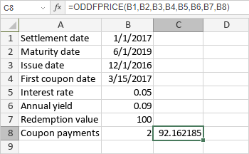

ODDFPRICE funkcija
ODDFPRICE funkcija je jedna od finansijskih funkcija. Koristi se za izračunavanje cene po vrednosti od $100 nominalno za hartiju od vrednosti koja isplaćuje periodične kamate, ali ima neparan prvi period (kraći ili duži od ostalih perioda).
Sintaksa
ODDFPRICE(settlement, maturity, issue, first_coupon, rate, yld, redemption, frequency, [basis])
ODDFPRICE funkcija ima sledeće argumente:
| Argument | Opis |
|---|---|
| settlement | Datum kada je hartija kupljena. |
| maturity | Datum kada hartija dospeva. |
| issue | Datum izdavanja hartije. |
| first_coupon | Datum prve kamate. Ovaj datum mora biti nakon datuma kupovine, ali pre datuma dospeća. |
| rate | Kamatna stopa hartije. |
| yld | Godišnji prinos hartije. |
| redemption | Otplatna vrednost hartije, po $100 nominalno. |
| frequency | Broj isplata kamata godišnje. Moguće vrednosti su: 1 za godišnje isplate, 2 za polugodišnje, 4 za kvartalne. |
| basis | Osnova za brojanje dana, numerička vrednost ≥0 i ≤4. Opcioni argument. Moguće vrednosti su prikazane u tabeli ispod. |
Argument basis može biti jedna od sledećih vrednosti:
| Numerička vrednost | Osnova brojanja |
|---|---|
| 0 | US (NASD) 30/360 |
| 1 | Stvarno/stvarno (Actual/actual) |
| 2 | Stvarno/360 (Actual/360) |
| 3 | Stvarno/365 (Actual/365) |
| 4 | Evropsko 30/360 |
Napomene
Datumi moraju biti uneti pomoću DATE funkcije.
Kako primeniti ODDFPRICE funkciju.
Primeri
Na slici ispod prikazan je rezultat koji vraća ODDFPRICE funkcija.
